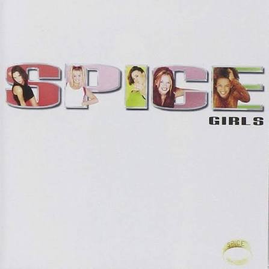

Typography in Pop Music
Typography is an important part of album cover design. The font, color, size, and placement of words can change how an album looks and feels.
Over the years, pop album covers have changed a lot. Some use big and colorful lettering, while others use simple fonts.
1980s

Madonna - True Blue (1986)
In the 1980s, album covers often used bold colors and dramatic typography. Madonna's True Blue uses elegant lettering to create a glamorous look.
1990s

Spice Girls - Spice (1996)
The 1990s were known for fun and playful typography. Bright colors and bold lettering helped album covers stand out.
2000s
img src="images/brittneyspearsalbum.jpeg">Britney Spears - Oops!... I Did It Again (2000)
In the 2000s, album covers used bright colors, decorative fonts, and glamorous designs. Typography helped create a strong pop star image.
2020s
Charli XCX - Brat (2024)
Today, many album covers use simple typography. Brat is a good example because it uses lowercase black lettering on a bright green background.
How Typography Has Changed
Album covers have changed alongside music trends and technology. Older designs often used decorative lettering, while modern covers can use simple fonts to create a strong visual style.
When Does It Work?
Typography works when it matches the artist's style and makes the album recognizable. It does not work as well when the text is hard to read or the design is too crowded.
Design Inspiration
These websites show different ways typography is used in music and design.
Explore the Timeline
See how album designs changed over time.
GO TO PAGE TWO